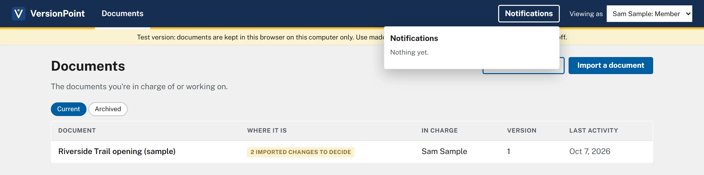

Lesson 05 minutesThe sample office
Before you start
What the test version is, what it keeps, and who does what in VersionPoint.
Why it matters
The test version is a real copy of VersionPoint, but it keeps everything in your browser and has no sign-in. Knowing that up front keeps real documents out of it, and keeps your practice from disappearing.
Watch
![The VersionPoint test version's first screen. Callout 1 marks the lead line: Revision control for communications documents: send a draft for review, take back every edit as a revision to approve, and keep every margin note out of the copies that go out. Callout 2 marks the banner: This is the test version. Everything stays in this browser on this computer; nothing is sent anywhere. Use made-up or already-public documents while testing. Callout 3 marks the Try the sample office card with its Open the sample office button. Callout 4 marks the Set up your office card, with Office name, Your name, Your email and Set up.](assets/l0-start-a.webp)
- What VersionPoint does, in one line: send a draft for review, take back every edit as a revision to approve, and keep every margin note out of the copies that go out.
- This is the test version. Everything stays in this browser on this computer, and nothing is sent anywhere.
- Try the sample office: a made-up office with one person in each role. The course uses it.
- Set up your office makes an empty office with you as its Admin. You won't need it for the course.
![The Documents page of the sample office. Callout 1 marks Documents in the bar at the top. Callout 2 marks the Notifications button. Callout 3 marks Viewing as, set to Sam Sample: Member. Callout 4 marks the strip under the bar: Test version: documents are kept in this browser on this computer only. Use made-up or already-public documents. Licensing is switched off. Callout 5 marks the one document, Riverside Trail opening (sample), and callout 6 its tag, 2 imported changes to decide. The table's other columns show Sam Sample in charge, version 1, and the last activity date.](assets/l0-documents-a.webp)
- Documents: every document you're in charge of or working on. It's where every lesson starts.
- Notifications: what other people did that you need to know about, like being added to a document.
- Viewing as shows who you are. In the course you're Sam Sample, a Member, unless a step says otherwise.
- The test-version strip, on every page.
- The app's own sample release. It arrived with a reviewer's tracked changes and notes already in it.
- Its tag says where it is: 2 imported changes to decide. You'll decide them in lesson 5.
Who does what
Everyone in an office has one of four roles. The words in quotes are the app's own.
| Role | What they can do |
|---|---|
| Member | Works on the documents they're in charge of or added to: sends, brings back, approves. |
| Lead | Everything a member does, on every document in the office's library. |
| Admin | Everything, plus people and the license; keeps records reachable after someone leaves. |
| Executive | Can suggest edits to any document; each edit waits for the comms team to approve it. Sees every document. |
Your reviewers have no role at all. They never sign in to VersionPoint. They only ever get a Word file from you, and send it back.
Try it
- Open the VersionPoint test version in a second window, beside this page.
- Read the banner under the lead line. Then choose Open the sample office.
- On Documents, find Riverside Trail opening (sample) and its tag, 2 imported changes to decide. Don't open it yet.
- Open Viewing as at the top and look at the five people in the list. Leave it on Sam Sample: Member.
- Choose Notifications. It says Nothing yet. Choose Notifications again to close it.
Check your work

Watch out for
Quick check
Pick an answer to see why it is or isn't right. Nothing is scored or sent anywhere.
Question 1
A colleague asks if they can try the test version on the draft of tomorrow's real release. What do you tell them?
Question 2
Your subject matter expert asks for a VersionPoint login so they can review. What do they need?
Lesson 1 brings the practice release, The Lake Shuttle, into the sample office.